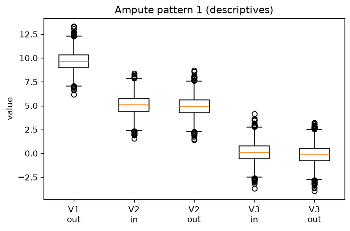
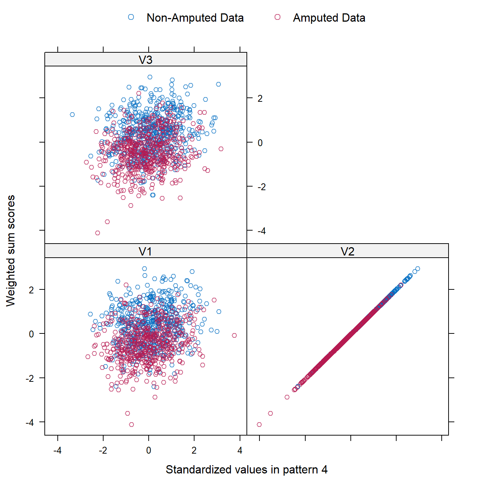
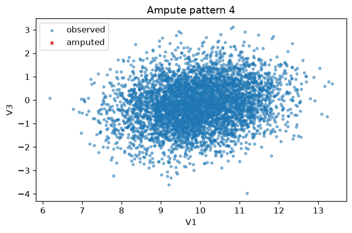
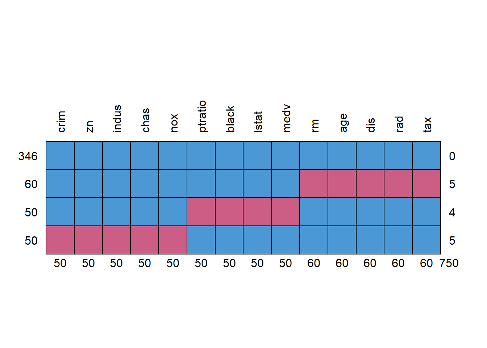

V7: Ampute Simulation
Vignette 7 of 8 · Compare to Generate missing values with ampute by Rianne Schouten
This walkthrough mirrors the official R **mice** tutorials in Python. Deterministic tables and formulas are checked against the R reference; stochastic imputations and plots are labelled when they may differ.
What PyMICE does differently from R
- Default randomness uses NumPy (
rng="numpy"), so imputed values may differ from R unless you setrng="r". - Categorical factors are often shown as numeric codes in console output.
- Diagnostic figures use matplotlib instead of lattice (same intent, different styling).
- See REPRODUCIBILITY.md for exact replication options.
Parity details (maintainers)
Expected to match exactly
These numbered steps are checked against reference/07_ampute/vignette_extracted.R:
- Step 4 —
names(result)layout for R `mads` objects. - Step 9 —
result$propproportion matches 0.5. - Step 10 — adjusted
result$propis 0.6 whenbycases=FALSEandprop=0.2. - Step 11 —
mechreturnsMAR; MNARpatternslayout matches R.
Expected to differ (RNG / rendering)
- Step 1 — package help opens R help page vs. PyMICE custom help screen.
- Step 2 — bundled
ampute_testdata.csv; summary may differ slightly across R versions. - Step 3 — MCAR
head(result$amp); nativerun_ampute_chain()within ~5% miss-count of R when backend unavailable. - Step 5 — md.pattern counts require R `
amputebackend (setPYMICE_R_AMPUTE=1`). - Steps 6–8 — md.pattern heatmap, bwplot, and xyplot matplotlib diagnostics.
- Step 10 — ampute with
bycases=FALSEcellwise proportion and adjustedresult$prop.
Reference-only (step 12)
The R tutorial also discusses patterns, freq, weights, type, run, and odds in depth. Step 12 documents these API sections; they are not separate R snapshot blocks.
Introduction
We present an R-function to generate missing values in complete datasets. Such an amputation procedure is useful to accurately evaluate the effect of missing data on analysis outcomes.
R-function ampute is available in multiple imputation package mice. In this tutorial, we focus on amputation — the generation of missing values in complete data — as the opposite of imputation.
For a theoretical justification, see Schouten, Lugtig and Vink (2018). Missing-data methods are typically evaluated in four steps: simulate complete data, ampute, impute, and compare analysis outcomes. Before ampute, most simulation studies relied on simplistic MCAR missingness; ampute enables realistic MAR and MNAR mechanisms with controlled patterns and proportions.
The walkthrough below follows the original tutorial's argument order (data, default amputation, diagnostics, prop, and mech). Sections on patterns, freq, weights, type, and odds are reference-only in PyMICE.
Function `ampute` and its arguments
1. Read ampute documentation
Use the help function to read ampute's documentation. The function is available in multiple imputation package mice.
Note: PyMICE help page; R opens a separate pager.
from pymice import help
help("ampute")ampute(function)
================
Description
-----------
Introduce missing values under MCAR, MAR, or MNAR mechanisms for
simulation and sensitivity analysis.
Usage
-----
from pymice import ampute
result = ampute(data, prop=0.3, mech='MAR', seed=2016)
amp = result.amp # amputed data
Parameters
----------
data
Complete numeric array.
prop
Target proportion of missing cells.
mech
'MCAR', 'MAR', or 'MNAR'.
weights
Column weights for MAR/MNAR sum-score mechanism.
patterns
Binary pattern matrix (optional).
bycases
If True, delete rows; if False, delete cells per column.
seed
RNG seed.
Source
------
Schouten, Lugtig & Vink (2018); mice_ampute vignette.
See Also
--------
mice, md_patternCompare to R reference
library("mice")
help(ampute)2. Generate complete data
The first argument data is an input argument for a complete dataset. In this tutorial, as in many simulation studies, we will randomly generate a dataset to be our complete dataset. Here, we will use function mvrnorm from R-package MASS to sample from a multivariate normal distribution.
testdata, names = load_ampute_testdata()
print(format_ampute_summary_r(testdata, names)) V1 V2 V3
Min. :6.180 Min. :1.411 Min. :-3.9607102
1st Qu.:9.316 1st Qu.:4.332 1st Qu.:-0.6773767
Median :10.003 Median :4.997 Median :-0.0008242
Mean :10.003 Mean :5.000 Mean :0.0012490
3rd Qu.:10.703 3rd Qu.:5.673 3rd Qu.:0.6760525
Max. :13.721 Max. :8.692 Max. :4.1653921Compare to R reference
set.seed(2016)
testdata <- as.data.frame(MASS::mvrnorm(n = 10000,
mu = c(10, 5, 0),
Sigma = matrix(data = c(1.0, 0.2, 0.2,
0.2, 1.0, 0.2,
0.2, 0.2, 1.0),
nrow = 3,
byrow = T)))
summary(testdata) V1 V2 V3
Min. :6.180 Min. :1.411 Min. :-3.9607102
1st Qu.:9.316 1st Qu.:4.332 1st Qu.:-0.6773767
Median :10.003 Median :4.997 Median :-0.0008242
Mean :10.003 Mean :5.000 Mean :0.0012490
3rd Qu.:10.703 3rd Qu.:5.673 3rd Qu.:0.6760525
Max. :13.721 Max. :8.692 Max. :4.16539213. Default amputation
We can immediately generate missing values by calling ampute. The resulting object is of class mads and contains the default values that are used as arguments. It is important to know that the incomplete dataset is stored under object amp in class mads.
result = chain['result'][1] "mads"Compare to R reference
result <- ampute(data = testdata)
class(result)[1] "mads"print(format_ampute_head_r(result.amp[:6], names)) V1 V2 V3
1 9.2233067 4.7715856 -0.8695553
2 NA 5.8927951 0.9322673
3 9.9892764 4.6194295 0.2756616
4 10.410801 4.4804258 NA
5 7.9680786 3.3664286 -2.055320
6 9.2389696 4.8457801 0.3358049Compare to R reference
head(result$amp)V1 V2 V3
1 9.223307 4.771586 -0.8695553
2 NA 5.892795 0.9322673
3 9.989276 4.619429 0.2756616
4 10.410801 4.480426 NA
5 7.968079 3.366429 -2.0553200
6 9.238970 4.845780 0.33580494. Inspect mads metadata
Apart from the argument values and the incomplete dataset, the mads object contains the assigned subset for each data row (cand), the weighted sum scores (scores) and the original data (data).
print(format_ampute_names_r())[1] "call" "prop" "patterns" "freq" "mech" "weights"
[7] "cont" "std" "type" "odds" "amp" "cand"
[13] "scores" "data"Compare to R reference
names(result)[1] "call" "prop" "patterns" "freq" "mech" "weights"
[7] "cont" "std" "type" "odds" "amp" "cand"
[13] "scores" "data"5. Missing data pattern
We can quickly investigate the incomplete dataset with function md.pattern, where the resulting visualization shows the missing data in red and the observed data in blue. The first row always shows the complete cases, of which we have approximately 50%. Each subsequent row depicts a specific missing data pattern. By default, ampute generates missing values in each variable. Note that because md.pattern sorts the columns in increasing order of missing data proportion, the variables are displayed in a different order than in the dataset itself.
print(format_md_pattern_r(md_pattern(result.amp, names))) V3 V1 V2
4964 1 1 1 0
1722 1 1 0 1
1665 1 0 1 1
1649 0 1 1 1
1649 1665 1722 5036Compare to R reference
md.pattern(result$amp) V3 V1 V2
4964 1 1 1 0
1722 1 1 0 1
1665 1 0 1 1
1649 0 1 1 1
1649 1665 1722 5036Additional features in `ampute`
6. Pattern heatmap
The missingness pattern heatmap (md.pattern(..., plot=TRUE)) visualizes which cells are observed (blue) versus missing (red). PyMICE reproduces the pattern counts in the console table above; the lattice heatmap is reference-only in this walkthrough.
# R draws md.pattern heatmap — PyMICE plot omitted for alignment(not run — )Compare to R reference
md.pattern(result$amp, plot=TRUE)7. Amputed boxplots
Function bwplot allows for a comparison between amputed and non-amputed data. Note that the function uses as input the mads object and not the incomplete dataset.
Note: Boxplot after MNAR amputation (pattern 1).
plot_ampute_bwplot(result_mnar, names, which_pat=0, descriptives=True)(plot below)Compare to R reference
bwplot(result, which.pat = 1, descriptives = TRUE)

8. Amputed scatterplots
Similar inspections can be done using the function xyplot. The scatterplots show the correlation between the variable values and the weighted sum scores.
Note: Scatter plot for pattern 4 after weighted continuous amputation.
plot_ampute_xyplot(result_xy, names, which_pat=3)(plot below)Compare to R reference
xyplot(result, which.pat = 4)

Argument `prop`
9. Proportion of incomplete cases
The argument prop specifies the proportion of incomplete rows. As a default, the missingness proportion is 0.5. A proportion of 0.5 means that 50% of the data rows will have missing values. This is not the same as the proportion of missing cells, because incomplete cases will still have some observed values for some variables.
result.prop[1] 0.5Compare to R reference
result$prop[1] 0.510. Proportion of missing cells
To specify the proportion of missing cells, additional argument bycases should be set to FALSE. As the testdata contains 10000 × 3 = 30000 cells, a missing data proportion of 0.2 means that approximately 6000 cells will become missing.
result2 = chain['result2']
print(format_md_pattern_r(md_pattern(result2.amp, names))) V3 V2 V1
3994 1 1 1 0
2070 1 1 0 1
1990 1 0 1 1
1946 0 1 1 1
1946 1990 2070 6006Compare to R reference
result <- ampute(testdata, prop = 0.2, bycases = FALSE)
md.pattern(result$amp) V3 V2 V1
3994 1 1 1 0
2070 1 1 0 1
1990 1 0 1 1
1946 0 1 1 1
1946 1990 2070 6006result2.prop[1] 0.6Compare to R reference
result$prop[1] 0.6In combination with the current set of missing data patterns, the resulting proportion of incomplete cases is returned by result$prop.
Missingness mechanisms
11. MAR and MNAR mechanisms
Argument mech in function ampute is a string with either MCAR, MAR or MNAR. For MAR missingness, the information about the missing data is in the observed data; for MNAR missingness, the information about the missing data is missing itself.
result_mar.mech[1] "MAR"Compare to R reference
result$mech[1] "MAR"print(format_patterns_matrix_r(result_mnar.patterns, names)) V1 V2 V3
1 0 1 1
2 0 0 1
3 1 1 0
4 0 1 0Compare to R reference
result <- ampute(testdata, freq = myfreq,
patterns = mypatterns, mech = "MNAR")
result$patterns V1 V2 V3
1 0 1 1
2 0 0 1
3 1 1 0
4 0 1 0Reference (not in R snapshot walkthrough)
12. Deep reference: `patterns`, `freq`, `weights`, `type`, `run`, and `odds`
The R tutorial discusses custom missingness patterns, frequency vectors, MAR weights, variable type, the run flag, and MNAR odds in depth. PyMICE exposes the same concepts on ampute():
from pymice import ampute
import numpy as np
x = np.random.default_rng(1).normal(size=(200, 3))
res = ampute(x, prop=0.3, mech='MAR', patterns=[[1, 0, 1]], freq=[1])
res.patterns # which columns are amputed per pattern
res.freq # pattern weights
res.weights # MAR odds / weights matrixSee docs/dev/PARITY_STATUS.md and help('ampute') for full API notes.
# Reference-only — not a separate console block in the R snapshot(not run — )Compare to R reference
# See reference/07_ampute/vignette_extracted.R sections on patterns/odds/run